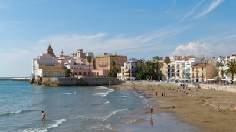
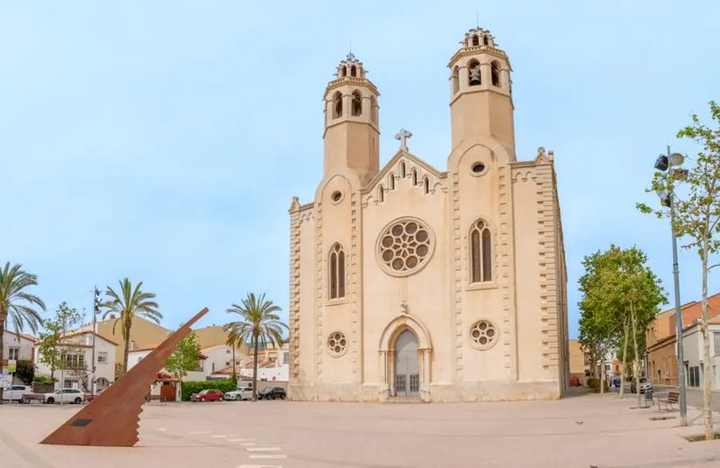
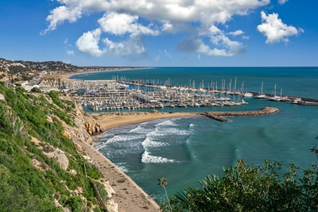
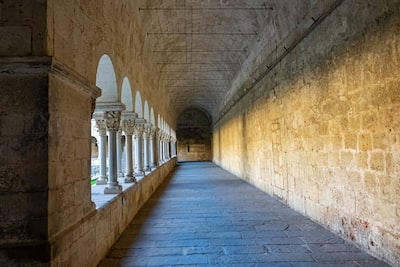
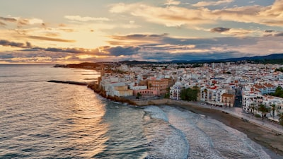

Explore your interests. Discover new places.
A network of encyclopedias and guides to learn, follow your hobbies and discover places. Find them all here.
Look up at the sky. Come back to Earth.
Two areas of Planetpedia's own, to explore through images, fact sheets and reading paths. In-depth explanations stay in the network's encyclopedias.
 Solar system · Stars · Galaxies · Exploration
Solar system · Stars · Galaxies · Exploration
Universe
Look further. Discover the cosmos, from our own star to the most distant galaxies.
Explore the universe → Oceans · Climate · Geology · Ecosystems
Oceans · Climate · Geology · Ecosystems
Planet Earth
Get to know the world we live in: its landscapes, its forces and its life.
Explore the Earth →Universe
Where to start looking at the sky.
- Solar systemThe Sun, the eight planets and their moons, asteroids and comets.
- Stars and galaxiesHow stars are born, change and die, and how they gather in galaxies like the Milky Way.
- CosmologyThe origin and expansion of the universe, told in an accessible way.
- Space explorationMissions, probes, telescopes and the people who made them possible.
- StargazingConstellations, binoculars and telescopes: a guide to get started.
- Curiosities and numbersRecords, anecdotes, surprising discoveries and interactive simulators.
Planet Earth
The processes that shape our planet.
- Inside the EarthThe planet's layers, tectonic plates, volcanoes and earthquakes.
- Oceans and waterSeas, rivers, glaciers and the water cycle.
- Atmosphere and climateWeather, extreme events and climate change.
- Life and ecosystemsBiodiversity, habitats and how species interact.
- World geographyContinents, landscapes and major regions.
- Our impactResources, pollution and conservation.
Learn about a subject
Subject encyclopedias, each devoted to one field. Not all of them are called "pedia": what they share is that they explain their subject well.
Music and arts
Composers, painting and film
- Classicapedia Composers, works and periods of classical music, explained so you can enjoy it more. classicapedia.com
- Pinacopedia Painters, paintings and museums: art history, one work at a time. pinacopedia.com
- Cinematopedia Films, directors and genres to understand and enjoy cinema. cinematopedia.com
Science, technology and health
From the lab to the clinic
- Newtonpedia Physics, chemistry and maths told clearly, from the laws to the people who found them. newtonpedia.com
- Medicapedia Diseases, symptoms and treatments explained in plain language. medicapedia.org
- Farmacos.ai Medicines: what they are for, how to take them and what to watch out for. farmacos.ai
- IApedia Artificial intelligence explained clearly: what it is, how it works and how to use it. iapedia.si · in Spanish
- Enfermería Sí Resources, techniques and exam preparation for nurses and nursing students. enfermeria.si · in Spanish
Humanities
Ideas, myths and symbols
Education and society
Learn, understand and decide
- Escolapedia Notes and study guides for primary and secondary school. escolapedia.com · in Spanish
- Leypedia Laws, rights and paperwork explained for everyone. leypedia.com · in Spanish
- Saber para Invertir Personal finance and investing, from the basics and without easy promises. saberparainvertir.com · in Spanish
- Celebraciones Festivals, traditions and special dates, with their origins and how to celebrate them. celebraciones.org
Food and wine
Kitchens and wineries
Hobbies and everyday life
Sport, games and pets
No encyclopedia matches your search.
Discover a place
Local guides for people who live there and for visitors: what to see, where to eat, what's on and local services, with checked information.
-

TownPhoto: Howard Walsh / Unsplash Discover Sitges Beaches, the church on the Punta, Carnival and town life all year round. sitges.si -

Town Discover Sant Pere de Ribes Vineyards, farmhouses and town festivals between the Garraf and the Penedès. santperederibes.si -

TownPhoto: Manuel Torres Garcia / Unsplash Discover Castelldefels From the castle to the beach: what to see, where to eat and what's on. castelldefels.si - Town Discover Vilanova i la Geltrú Harbour, promenade and museums, plus local services and events. vilanova.si
-

TownPhoto: Manuel Torres Garcia / Unsplash Discover Sant Cugat The monastery, Collserola park and a town made for living and walking. santcugat.si -

DistrictPhoto: Max / Unsplash Explore Garraf Beaches, villages and vineyards of the district, with a guide to each town. garraf.si - Island Explore Ibiza (Eivissa) Dalt Vila, coves, ferries and local life on Ibiza and Formentera. eivissa.si
- Badalona
- Cadaqués
- Calafell
- Girona
- Lleida
- Salou
- Tarragona
- Vilafranca
No guide matches your search.
This week across the network
Four reads picked from different sites. Each one takes you to the original article.
Planetpedia is the work of one person who has built, site by site, a network of resources on very different subjects.
It started with curiosity: classical music, wine, tennis, philosophy. Then came the local guides to Catalonia and Ibiza. Each project has its own domain and identity, and they all share the same idea: explain things clearly, cite sources and be useful to anyone looking for something specific.
A project by Alejandro Rosàs Navarro.
This portal is the way in. Here you can see everything in the network and choose your path: learn or explore.